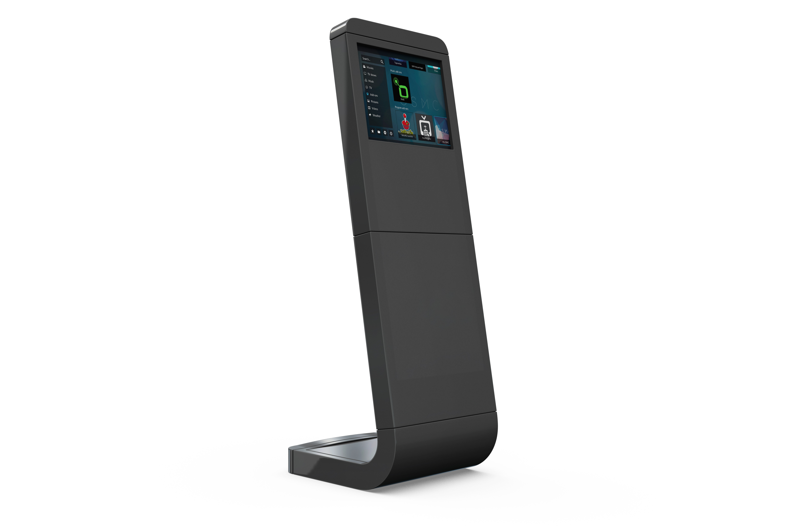

Sistema para controle de atendimento
Sistema para controle de atendimento

Este aplicativo foi desenvolvido como parte da avaliação para a disciplina de Desenvolvimento Móvel.
Contribuiram com este projeto:
 {{aluno.nome}} {{aluno.sobrenome}} - {{aluno.matricula}}
{{aluno.nome}} {{aluno.sobrenome}} - {{aluno.matricula}}